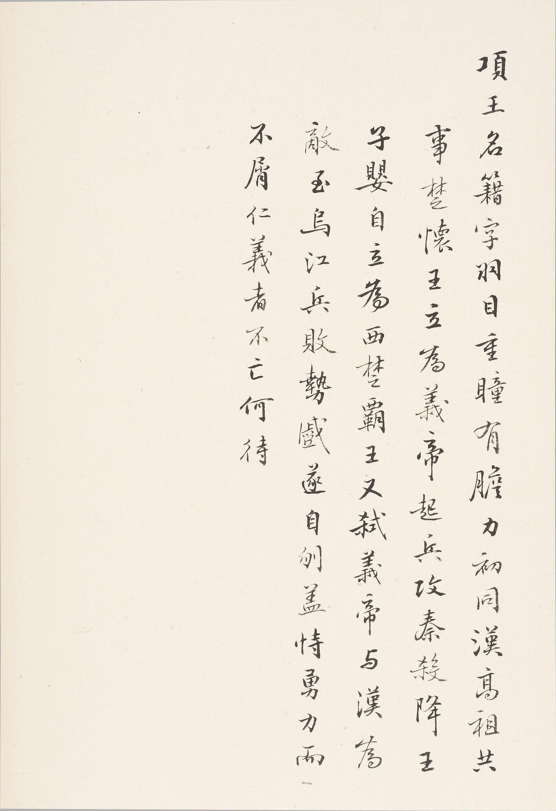

第 16 章
藏经洞之外
向达在北平图书馆的工作间里翻开一份新疆文物清单时，窗外正在落雪。清单用钢笔写在横格纸上，四栏：编号、名称、件数、备注。备注栏里出现了“少若干”三个字。他在这三个字旁边画了一个问号，然后合上文件，走到书架前抽出《敦煌劫余录》的校样。两叠纸并排放在桌上。左边是敦煌的条目，每一条都有编号、定名、行数、题记摘录，精确到某一行缺了几个字。右边是新疆的清单，格式相同，栏目一致，但备注栏里“少若干”出现了七次，“原号佚”出现了三次，“待访”出现了十一次。
向达没有在敦煌校样上再添新条目。他拿起铅笔，在新疆清单的空白处写了一行小字：此件已入藏某处，然无号可稽。这行字写在1933年冬天。距离斯坦因第一次进入藏经洞已经二十六年。距离伯希和在洞中挑选三周已经二十五年。距离京师图书馆接收第一批敦煌经卷已经二十三年。距离《敦煌劫余录》正式出版还有四年。
向达写下这行字的时候，桌上还摊着另一份文件：中央研究院历史语言研究所的会议通知抄件，议题包括西北文物登记办法。两份文件放在一起，本身就是一种解释。向达不是第一个把敦煌经验移用到别处的人。
1927年春天，中国学术团体协会与瑞典探险家斯文·赫定谈判时，中方代表徐炳昶在会议记录里写下了这样一段话：“赫定君谓采集品运瑞研究，研究毕归还。然敦煌之事可为前鉴。斯坦因、伯希和皆言研究毕归还，今其物安在？”这段话被抄录在协会的正式会议记录中，现存档案可以查到。徐炳昶没有展开论述，他只是把敦煌的例子放在那里，作为谈判桌上的筹码。
筹码生效了。最终协议规定考古采集品留在中国，研究期限和发表方式另议。这是中国学术机构第一次以书面形式限制外国考察队对文物的处置权。协议文本中“采集品留在中国”的措辞是经过多轮修改的产物。最初的草案写的是“重要文物留在中国”，中方代表坚持删去“重要”二字。删去这两个字之后，所有采集品——不论学术价值高低——都归中国所有。这个修改意见的依据之一，就是敦煌的教训：斯坦因和伯希和当年挑选时，留下的恰恰是“不重要”的部分。
徐炳昶的日记里还记了一件事。谈判间隙，赫定曾问他：“你们为什么对敦煌的事这么在意？那些文书放在伦敦和巴黎，不是也能研究吗？”徐炳昶没有正面回答这个问题。他在日记里只写了一句话：“余告以敦煌文书中有唐人手迹，有官私文书，有寺院账簿，非仅佛经而已。”这句话的潜台词很清楚：敦煌文书的学术价值不在于单件文物的精美程度，而在于其作为整体档案的完整性。一旦被挑选、分割、分散到不同国家的不同机构，这种整体性就永久丧失了。赫定是否听懂了这句话，日记里没有记载。
向达在北平图书馆处理新疆文物清单时，面对的正是同一种整体性丧失。新疆的文物来自吐鲁番、库车、和田等多个遗址，被不同国家的不同考察队采集，运往不同机构。德国探险队带走的大部分在柏林，俄国考察队带走的在圣彼得堡，日本大谷探险队带走的分散在京都和东京，斯坦因第三次考察带走的在伦敦和德里。每一批都有各自的编号体系、各自的入藏账目、各自的目录。
向达手头有一份斯坦因《西域考古图记》的中文摘译稿。参与翻译的学者在给友人的信中抱怨过原书编号体系的混乱：同一件文物在不同卷册中使用了不同的编号，有些编号甚至没有对应的图版或描述。这封信没有公开发表，但向达在编目工作中遇到了同样的问题。他在一份工作笔记里写道：“斯坦因书中编号与实物不符者甚多，非亲见原件不能定。”这句话写在《敦煌劫余录》校样背面，没有注明日期。
编号体系的不统一，在敦煌文书上已经显现。斯坦因用S.编号，伯希和用P.编号，京师图书馆用千字文编号。同一件文书可能同时拥有两个或三个编号，也可能一个都没有。向达在整理时发现，有些文书在斯坦因的目录里有编号但实物不在伦敦；有些在京师图书馆清单上有记录但实物不在北京；还有些在双方的账目上都没有出现。这些“无号可稽”的文书去了哪里？一部分可能仍在私人手中。
1930年代的北平、天津、上海都有私人收藏家持有敦煌写卷，有些是从甘肃解送途中散出的，有些是后来从外地购得的。这些私人收藏大多没有公开目录，只有零星的题跋和书信提到它们的存在。向达在一封信里提到过一位收藏家手中的写卷，“其编号不可考，然纸质、字体确为唐写”。他没有公开这位收藏家的名字。另一部分可能已经损毁。
敦煌文书在解送途中经历多次转运：从莫高窟到敦煌县衙，从敦煌到兰州，从兰州到北京。每一次转运都涉及清点、装箱、装车、卸车、再清点。每一次清点都可能出现差错，每一次差错都可能意味着文书的丢失或损坏。宣统二年的解送清单上有多处“少若干”的记录，这些记录没有对应的追查报告。
向达在整理《敦煌劫余录》时处理了八千六百七十九件文书的信息。这个数字来自京师图书馆的接收清单和后续的清点记录。八千六百七十九件之外还有多少？没有人知道确切答案。
向达在1934年的工作笔记里估算过一个范围：“以解送清单所载总数与图书馆实收数相较，其间差额当在千件以上。”他用了“当在”这个词，表示这是一个推测而非确数。推测的依据来自三份文件的比对：宣统二年甘肃解送清单、京师图书馆接收清单、以及后来发现的部分私人收藏目录。三份文件之间的差额就是“少若干”所指向的部分。但这个差额本身也不精确——解送清单上的总数本身就有模糊之处，“少若干”三个字出现在多处，每一处的具体数字都没有写明。
向达的估算方法是：先统计解送清单上有明确编号的件数，再统计京师图书馆接收清单上有明确编号的件数，两者相减得到差额的最小值。这个最小值在一千件以上。至于最大值，他写道：“上限不可定，以‘少若干’之数无从确知故也。”
“无从确知”四个字是向达对第十五章留下的那个空位的直接回应。但这个回应本身也暴露了一个更深的问题。向达用来估算差额的方法——比对编号——恰恰依赖于编号体系的完整性。如果解送清单本身就有漏记、误记或模糊记录，那么任何基于这份清单的估算都只是近似值。他在笔记里承认了这一点：“解送清单所载未必尽实，甘肃委员当时清点是否逐件核对，亦无记录可查。”
这意味着，“少若干”所代表的可能不止几千件。它代表的是一个无法精确计量的区间：下限是一千件以上，上限则取决于解送过程中到底有多少件从未被登记过。那些从未被登记过的文书既不在解送清单上，也不在接收清单上，也不在任何外国机构的入藏账上。它们只存在于零散的私人收藏、地方记录和口耳相传之中。
向达在1935年的一篇文章里触及了这个问题的边缘。文章讨论的是敦煌文书的编目方法，发表在《国立北平图书馆馆刊》上。他在文中写道：“凡文书之已入藏者，无论中外，皆有编号可循；其未入藏者，虽知其尚在人间，然无号可稽，编目无从措手。”这段话没有引起太多注意——它太技术性了——但它实际上是在说：追索的边界就是编号的边界。
这个判断在当时没有被广泛接受。1930年代的舆论更倾向于把追索理解为一种道德和政治主张：外国考察队不应该来，来了不应该带走东西，带走了应该归还。这些主张不需要精确的编号作为依据。一篇社论可以完全不提任何具体编号而只谈“敦煌文物外流之痛”；一场演讲可以只提“斯坦因盗经”而不涉及S.编号体系的内容。
向达在1934年的一篇书评里对这种倾向做了温和的批评。他评论的是一本关于新疆考古的英文著作。书评前半部分逐条核对了书中引用的文献和编号；
后半部分突然转向一个更一般的问题：“今之谈西北文物者，动辄曰敦煌如何如何。”他没有继续展开这句话——书评到此结束——但“动辄曰敦煌”五个字已经点出了扩展过程的一个副作用：当敦煌成为范例之后，具体的细节反而容易被忽略。
这种忽略不是恶意的。它来自一个现实压力：追索要获得力量就必须扩大范围。只谈敦煌藏经洞这一批文书，能动员的舆论资源有限；把视野扩展到整个西北地区——新疆、甘肃、内蒙古——就能形成更大的公共回响。一九二八至1930年间多个外国考察队在西北活动的事实，为这种扩展提供了现实依据。
扩展的直接后果之一是1930年《古物保存法》的颁布。这部法律规定了外国人在中国境内进行考古发掘的条件和文物出口的限制。法律文本中没有直接提及敦煌——它是一部普遍适用的法规——但立法过程中的讨论记录显示，敦煌案例被反复引用作为立法必要性的论据。

向达在1931年的一封信里提到了这部法律与敦煌的关系。他写道：“古物保存法之颁行，敦煌之事有力焉。”这句话写在给友人的信中，语气平淡，没有评论法律本身的优劣。
法律颁布之后，追索工作的重心发生了变化。在此之前，追索主要针对已经流散出去的文物——要求外国机构归还或提供副本；在此之后，追索开始包含预防性内容——阻止新的文物流失。
中央研究院历史语言研究所在1931年召开的那次会议就是这种转变的标志之一。会议记录抄件显示，傅斯年在发言中把敦煌经卷的解送散失和新疆文物的运输缺损并列为“同类问题”。
他没有说这两个案例完全相同——事实上它们的差异很明显：敦煌文书是在一个相对封闭的空间里被发现的，散失主要发生在解送途中和地方私藏环节；新疆文物则从一开始就处于多国考察队竞争采集的状态，散失路径更加分散。但傅斯年关心的是它们的共同点：都涉及编号体系的缺失或断裂，都导致后续追索缺乏完整的账目依据。
会议讨论中有人提出建立统一的西北文物登记制度。这个提议没有形成正式决议——当时的政治条件和学术资源都不足以支撑这样一个全国性制度——但它的出现本身说明，“编号/账目”这套来自敦煌经验的工具已经被视为一种可以推广的方法论。
推广的动力来自现实压力。斯坦因《西域考古图记》的中文摘译工作在这个时期启动。参与翻译的学者在给友人的信中抱怨过原书编号体系的混乱：同一件文物在不同卷册中使用了不同的编号，有些编号甚至没有对应的图版或描述。这封信没有公开发表，但它反映的问题与向达在编目工作中遇到的困境是同一个：当源头的编号体系本身就不可靠时，后续的任何追索都建立在流沙之上。
向达在1933年的工作笔记里写下了他对这个问题的应对方案：“凡遇编号歧异者，以实物为准；实物不可见者，以最早著录为准；最早著录亦不可得者，存疑待考。”
这三条原则后来被部分吸收进《敦煌劫余录》的编例中。《劫余录》的编例说明写道：“凡文书之编号以馆藏为准；馆藏无号者以原目录为准；原目录亦无号者别为附录。”
附录部分收录的就是那些“无号可稽”的文书。附录部分的体量不大——相对于八千六百七十九件正文条目而言——但它代表了一种承认：有些东西无法被纳入体系之内。《劫余录》的书名已经承认了这一点：“劫余”二字指向的是幸存下来的部分；被劫走的部分不在书中；而在到达图书馆之前就已消失的部分也不在书中。书名本身就是一份账目的边界声明。
1935年夏天的一个傍晚——具体日期在现有材料中无法确定——向达在北平图书馆的工作间里整理一批新到的西北文献照片。这批照片来自不同的来源：有些是外国考察队公布的图版翻拍，有些是国内收藏者提供的私藏照片。照片背面用铅笔写着简短的说明文字，其中一张写着“又一敦煌”。“又一敦煌”四个字写在照片背面而不是正式文件上。向达在这张照片背面没有加注。
他把照片按来源分成几摞，然后在每摞上面放了一张纸条标明临时编号。这些临时编号沿用了敦煌文书的格式：字母加数字加斜杠加序号。
他拿起那张写着“又一敦煌”的照片看了片刻。照片拍的是几件木牍和纸片，背景模糊不清，看不出出土环境。
照片背面的说明文字除了“又一敦煌”之外还有一行小字：“出土地不详，采集人不详。”向达把这张照片放在“待访”那一摞的最上面。
工作台上摊开着《敦煌劫余录》的校样和那份新疆文物的清单草稿。两份文件并排放着。
《劫余录》校样上的条目精确到每一行的字数；清单草稿上的“少若干”旁边还留着那个问号。
向达合上了那份非敦煌的账目文件。合上文件这个动作本身没有特殊含义。明天他还会打开它继续工作。《劫余录》的校样也还会继续校对下去。
两种工作——具体的敦煌编目和扩大的西北议题——在同一个空间里并存着。它们之间的张力没有被解决：越是把敦煌当作范例来讨论更广泛的西北文物问题，就越需要有人回到具体的编号和账目中去；而越是埋头于具体的编号和账目，就越容易被指责为只关注细节而忽略大局。向达那天晚上离开图书馆时带走了什么文件、留下了什么文件，现有材料中没有记载。
《敦煌劫余录》在1937年出版时收录了八千六百七十九件文书的信息。这个数字本身就是对“无号可稽”状态的一种回应：能编号的都编了号登了记。至于那些无法编号的部分——那些在解送途中散失、从未获得任何编号的文书——它们既不在外国机构的入藏账上，也不在京师图书馆的接收清单里。《劫余录》的书名已经承认了这一点。
1950年，有人在重抄宣统二年那份解送清单时遇到了“少若干”三个字。抄写者停了笔——这是唯一能确定的事——然后继续往下抄了。“少若干”之后的内容照常抄录，“少若干”之前的也照常抄录；只有这三个字本身被留在了原处，没有改动，也没有加注。这份重抄件后来被归入某个档案盒中，具体位置不详。
“少若干”三个字仍然在那里，等着一个确切的数字来填补它，但它可能永远等不到那个数字。因为那些从未获得编号的文书，确切数量和去向仍然是一个开放的问题，开放给未来的档案发现，也开放给新的研究方法。也许有一天，某封旧信、某页日记、某个被遗忘的清单会提供新的线索；也许不会。在那之前，“少若干”就一直是少若干：既不是零，也不是某个可以写进统计表的数字，只是三个字而已，留在纸上，留在时间里，留在每一个试图计算损失的人面前。